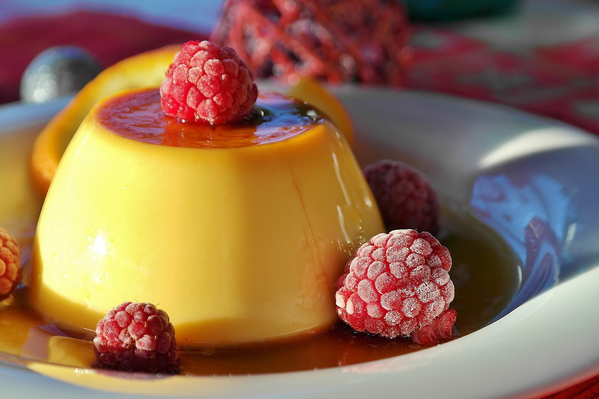

Flan
- 1 1/2 cups sugar
- 1 12oz can evaporated milk
- 5 eggs
- 1 teaspoon vanilla
- 1 cup of raisins
- pinch of salt
Preheat oven to 350 degrees.
To make caramel: heat together 3/4 cups of sugar and 1/4 cup of water in a saucepan. Stir until the mix becomes thick and a golden color.
Pour the caramel into a 9-inch round pan.
Mix together the evaporated milk, eggs, salt, vanilla, and rest of the sugar in a bowl. Pour into the pan on top of the caramel.
Bake in a water bath for 1 hour.
Let cool completely. Flip upside-down and serve.